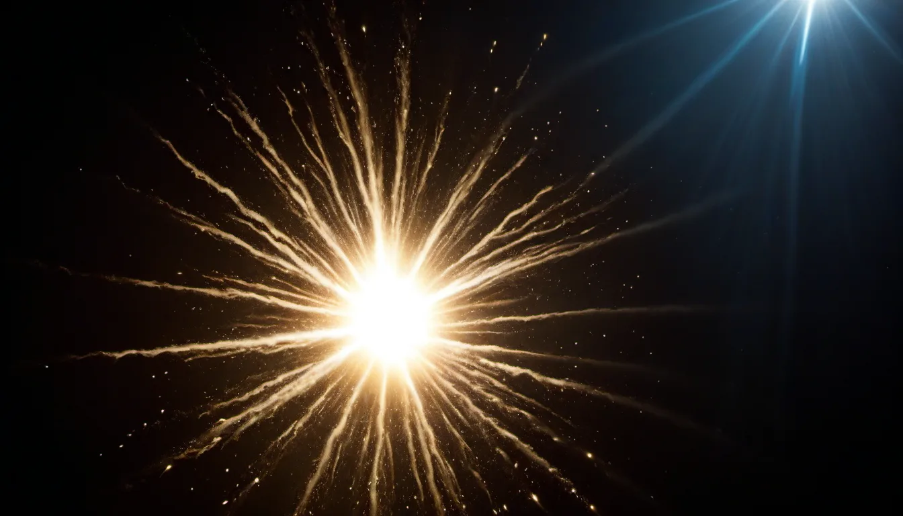

歴史が苦手なあなたへ
138億年の旅
宇宙のはじまりから、
今のあなたまで。
年号を覚える必要はありません。
これは、たったひとつの――そしてまだ終わっていない――
壮大な物語です。
まずは、途方もない話から
もし138億年を
「1年のカレンダー」にしたら？
宇宙が生まれてから今日までの138億年。数字が大きすぎてピンときませんよね。 そこで、この気の遠くなる長さをちょうど1年（1月1日〜12月31日）に縮めてみましょう。 すると、驚くことが起こります。
人類の歴史ぜんぶ（文明も、戦争も、あなたのおじいちゃんも）は、
12月31日の、最後の8分に、ぎゅっと詰まっています。
つまり歴史は、宇宙にとって「ついさっき」の出来事。さあ、1月1日に戻って旅をはじめましょう。

今から138億年前 ・ 宇宙カレンダーの1月1日
すべては「光」から
はじまった
はじまりは、あまりにも小さな一点でした。ある瞬間、それが想像を絶する勢いでふくらみます。 これがビッグバン。宇宙の誕生日です。
生まれたての宇宙は、火の玉のように熱く、まぶしい光でいっぱいでした。 やがて冷えていくと、ガスが集まり、重さで押しつぶされて――ついに星が輝きはじめます。 星は集まって銀河となり、宇宙は少しずつ、今の姿に近づいていきました。
あなたの体は、「星のかけら」でできています。
あなたの血の中の鉄、骨のカルシウム、息に混じる炭素。 これらは全部、大昔の星が一生を終えるときに作り、宇宙にまき散らしたものです。 私たちは文字どおり、星のうまれ変わり。夜空を見上げるのは、遠い親戚に会いに行くようなものなのです。
- 138億年前 ビッグバン。宇宙のはじまり
- 137億年前 最初の星が輝きだす
- 130億年前 銀河が生まれる（私たちの天の川銀河も）
今から46億年前 ・ 9月ごろ
私たちの「地球」が
生まれる
宇宙の片隅で、ガスとチリがぐるぐる回りながら集まり、真ん中に太陽が生まれました。 その周りに残ったかけらがぶつかり合い、だんだん大きな球になっていきます。そのひとつが――地球です。
できたての地球はマグマだらけの灼熱の星。そこへ火星ほどの天体が大衝突し、 飛び散ったかけらが集まって月ができたと考えられています。 やがて地球が冷えると雨が降りつづき、海が生まれました。生命のゆりかごの完成です。
月は、地球の「大事故」の記念品。
夜空にやさしく浮かぶ月は、じつは大昔の大激突で生まれた「かけら」です。 しかもこの月があるおかげで、地球の傾きが安定し、四季がおだやかに巡ります。 月がなければ、気候はもっと荒れていたかもしれません。
今から38億年前 ・ 9月〜12月30日
海の中で、
「いのち」が芽ばえる
あたたかい海の中で、最初のいのちが生まれました。目に見えないほど小さな、たった1個の細胞。 これがあなたや、犬や、桜の木の、いちばん最初のご先祖さまです。生き物はみんな親戚なのです。
やがて、酸素を作り出す微生物が登場し、空気ができあがります。生き物は海から陸へ。 そして地球の主役になったのが――巨大な恐竜たちでした。
ところが約6600万年前、巨大な隕石が地球に激突。恐竜は姿を消します。 しかしそのおかげで、それまで隅で小さく暮らしていた哺乳類に出番が回ってきました。 私たちの祖先の、大きなチャンスの始まりです。
恐竜がいなくなったから、あなたがいる。
もし隕石が落ちてこなかったら、地球は今も恐竜の天下で、人類は登場しなかったかもしれません。 あの「大事件」は、私たちにとっては幸運の入り口でもあったのです。歴史は、こんな偶然の連続でできています。
- 38億年前 最初の生命（1個の細胞）
- 5億年前 魚のなかま、そして陸へ
- 2億年前 恐竜の時代
- 6600万年前 隕石衝突 → 哺乳類の時代へ
今から700万〜1万年前 ・ 12月31日の夜
ついに、
「人間」の登場です
アフリカで、二本の足で立ち上がるサルの仲間が現れました。 手が自由になった彼らは、道具を作り、火を使い、そして何より言葉を手に入れます。 言葉は、心の中を伝え合い、知恵を次の世代へ受けわたす魔法の道具でした。
私たちホモ・サピエンス（＝かしこい人、という意味）は、約30万年前に登場。 やがてアフリカを出て、歩いて世界中へ広がっていきます。この大冒険をグレート・ジャーニーと呼びます。
そして約1万年前、人類は大発明をします。農業です。 自分で食べ物を育てられるようになると、人々は一か所に住みはじめ、村ができ、町ができ―― いよいよ「歴史」の幕が上がります。
世界中の人は、みんな「アフリカ出身」。
肌の色や言葉は違っても、たどっていけば私たちのご先祖はみんな同じアフリカの人々です。 人類は長い旅の末に世界へ散らばった、ひとつの大家族。壮大な家系図の、はるか先っぽに、あなたがいます。
紀元前3000年ごろ〜現在 ・ 12月31日 最後の1分
世界史ダイジェスト
ここからは、いよいよ人類の物語。難しい年号は忘れて、「大きな流れ」と「なるほど」だけ味わってください。 カードをタップすると、ちょっとしたへぇ話が開きます。
1万年以上前〜現在
日本史ダイジェスト
私たちの足もと、日本列島の物語です。教科書だと人物と年号だらけですが、 ここでは「どんな時代だったか」を一言でつかみましょう。カードをタップでへぇ話が開きます。
そして、今日 ・ 12月31日 23時59分59秒
物語の最先端に、
あなたがいる
ビッグバンから138億年。星が生まれ、地球ができ、いのちが芽ばえ、 人類が言葉をおぼえ、たくさんの人が笑ったり泣いたり戦ったりしながら、バトンをつないできました。
その気の遠くなるようなリレーの、いちばん先っぽを、今あなたが走っています。 あなたが生きている今日という日も、100年後の誰かにとっては「歴史」になります。
歴史とは、遠い昔の暗記ものではなく――
今日まで続いてきた、大きな物語のこと。
そして、あなたはその登場人物のひとりです。
きっかけは、ほんの少しの「へぇ！」で十分。
この旅が、あなたにとって歴史を好きになる、最初の一歩になりますように。